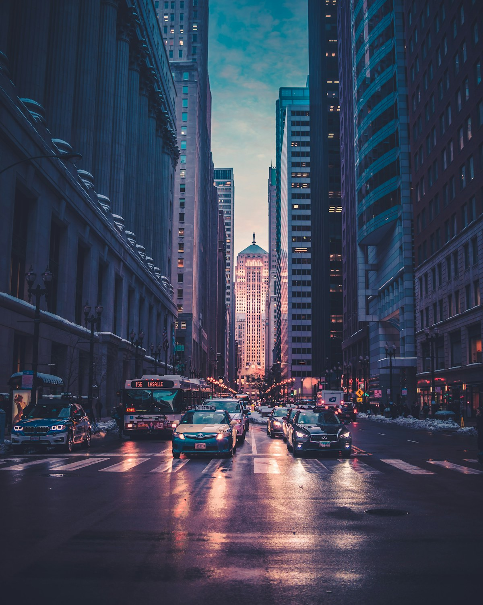
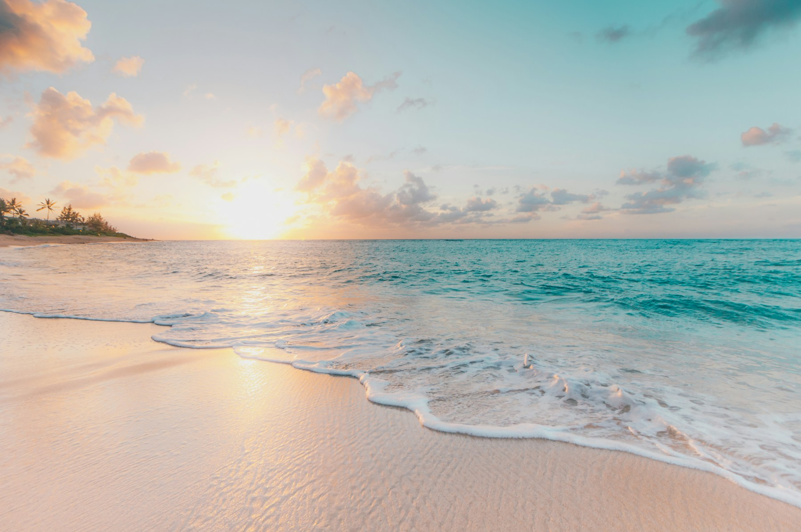

1

瑞士 · 因特拉肯
雪山草甸 | 公路大片
火 12345 人想去
# 出片友好旅行指南 #
拯救不会拍照的你

精选高颜值取景地
打卡拍照不迷路
配色参考更出片
路线规划不纠结
雪山草甸 | 公路大片
火 12345 人想去

老街涂鸦 | 文艺复古感
火 9876 人想去

洱海蓝调 | 慢生活氛围
火 8765 人想去

日落海风 | 白裙大片
火 7650 人想去
路线规划 + 拍照机位 + 色卡参考

适合第一次去大理、想拍海景和古镇氛围的人，行程节奏轻，机位集中。
浅色上衣、草编包，人物放在右侧三分线，海面留出大面积天空。
机位：码头木栈道侧边 | 色卡：奶白、湖蓝、浅绿避开正午顶光，用白墙和门框做干净背景，拍走路、回头、扶帽子。
机位：转角墙面 | 色卡：棉麻白、木色、砖红手机开网格线，人物站近镜头，远处湖面和船做背景层次。
机位：临海露台 | 色卡：灰蓝、米白、墨绿定制专属于你的出片行程
优先选背景干净、光线稳定、步行距离短的地方。海边、草甸、古镇外侧巷口和城市老街都适合新手拍照。
比滤镜更重要的是光线、留白和衣服颜色。先确定目的地色卡，再准备同色系穿搭，画面会更统一。